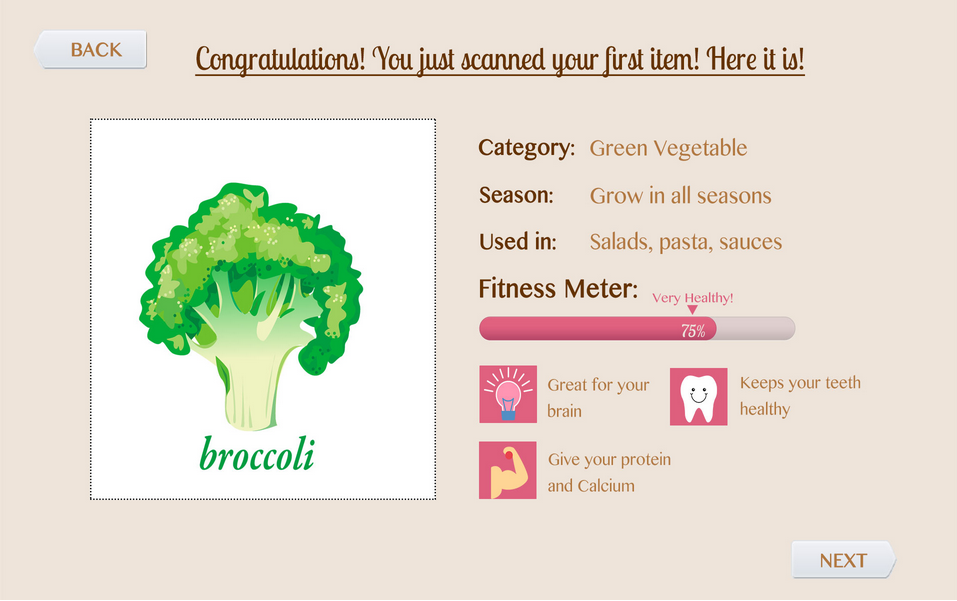
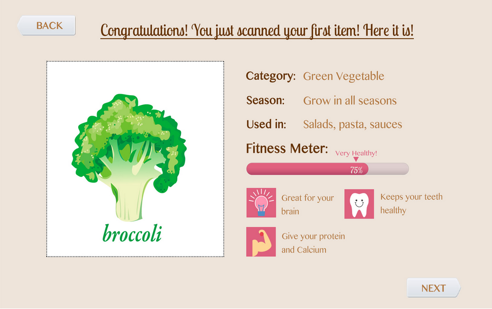
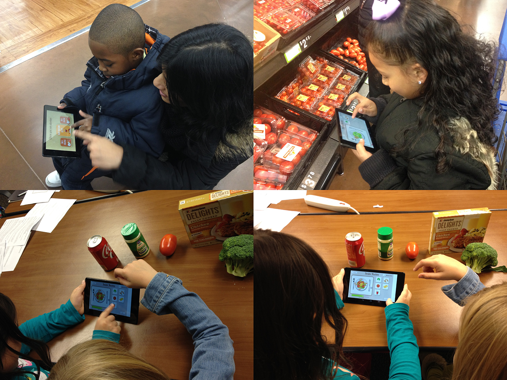

Grocery Shopping is a necessary task that most of us do at least once a month. We spend a large amount during the course of a week in purchasing, cooking, and consuming food, and it is essential for us to make informed decisions about the food we eat. But, to get that information while shopping along with managing your kids and family, takes time, and generally people are stressed for time. We aim at creating a solution for parents that will improve their shopping experience by making it more efficient, less time consuming, and assist in managing their children. We do not intend to create an interface that just helps parents track their kids, but rather a system that engages their children in the whole experience of shopping and getting more cognizant with the products they consume.
Another observation that we made was that most children are not engaged while at the store. They find it difficult to keep up with their parents while they are shopping and instead want to seek out entertainment. Children become impatient from boring stimuli in the grocery market, mindlessly meandering around isles of kitchenware, pharmaceutical, and other less than stimulating products. This time can be used to engage children in activities that teach them lessons in health, such as choosing the health foods and being conscious of the food options around them.
Example wirefrme of the homepage and item info page


Example design outcome of the homepage and item info page
 

We conducted some preliminary interviews with parents and children to dig deep into the subject. Also, we formally visited different grocery stores in Atlanta area, like Kroger, Publix, and Walmart. We talked to parents with kids and asked for any noteworthy problem in grocery shopping experience that they and their kids face.
We only reached out our target users at the very beginning and the end of the design process. We failed to kept in touch with them and connected them during the design process. I would asked for their opinions and feedbacks during the whole process so that we can have better rationale as well as solutions for the design and deeper understanding of the problem.
The whole process is just one iteration of the product. However, I would like to conduct more iterations as we have already got so many future directions. The future iteration would make a lot of progress and is worth conducting.
>Sign up experience redesign